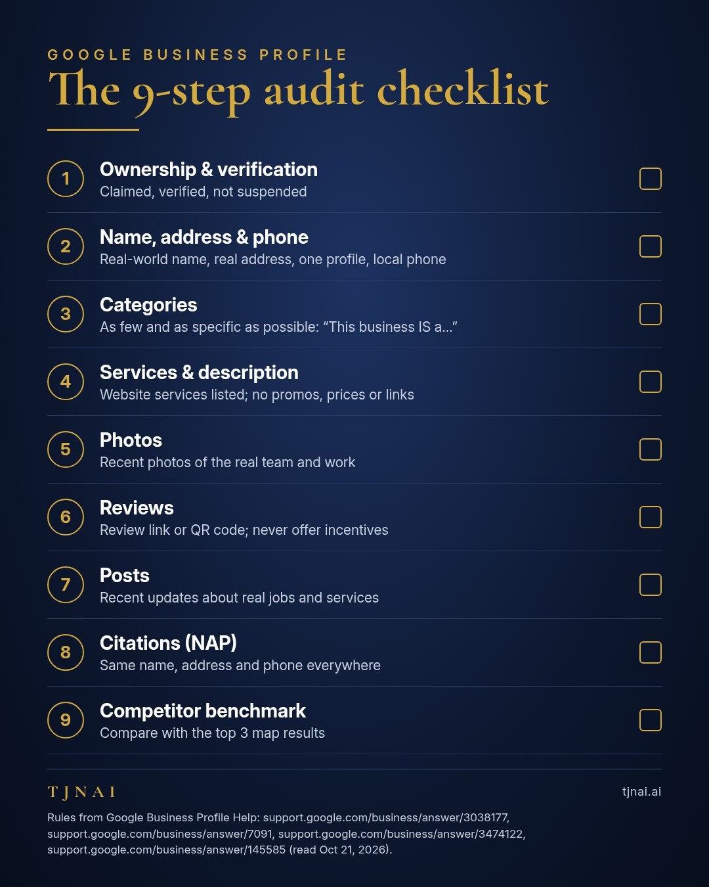
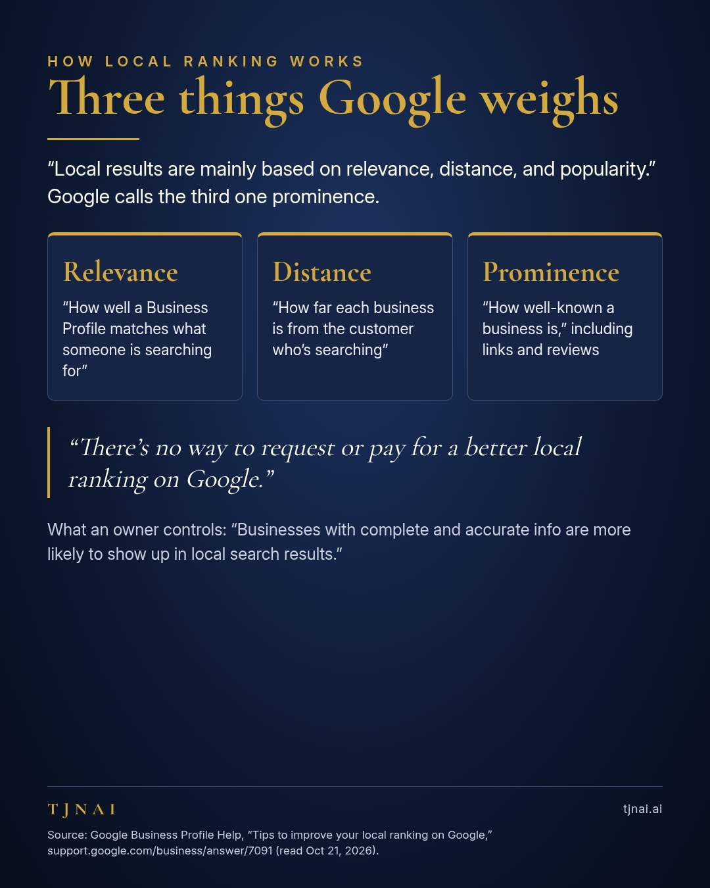
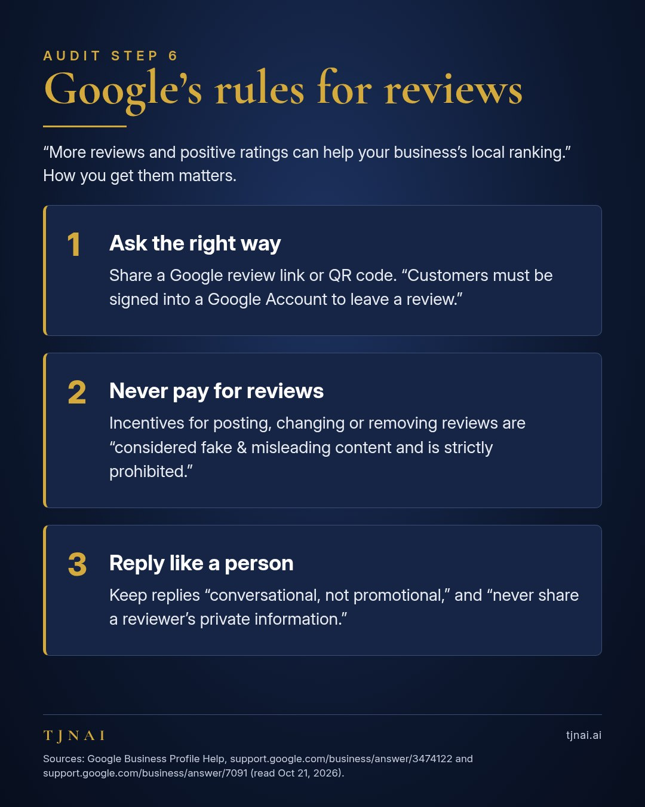
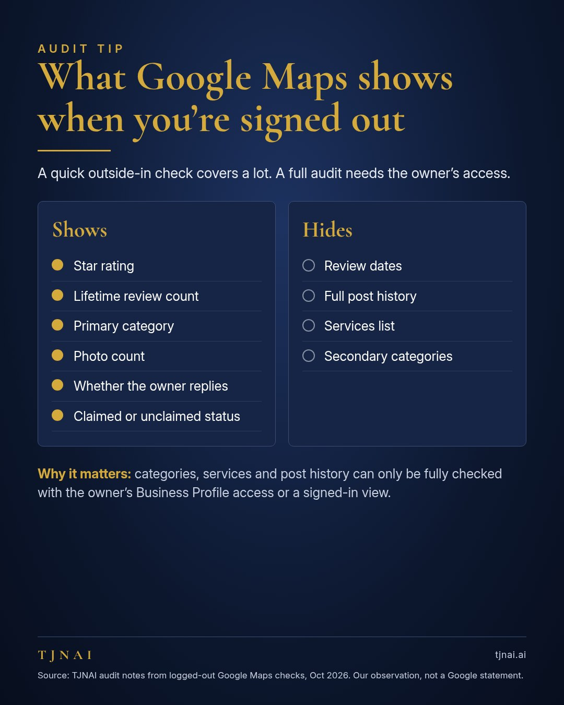
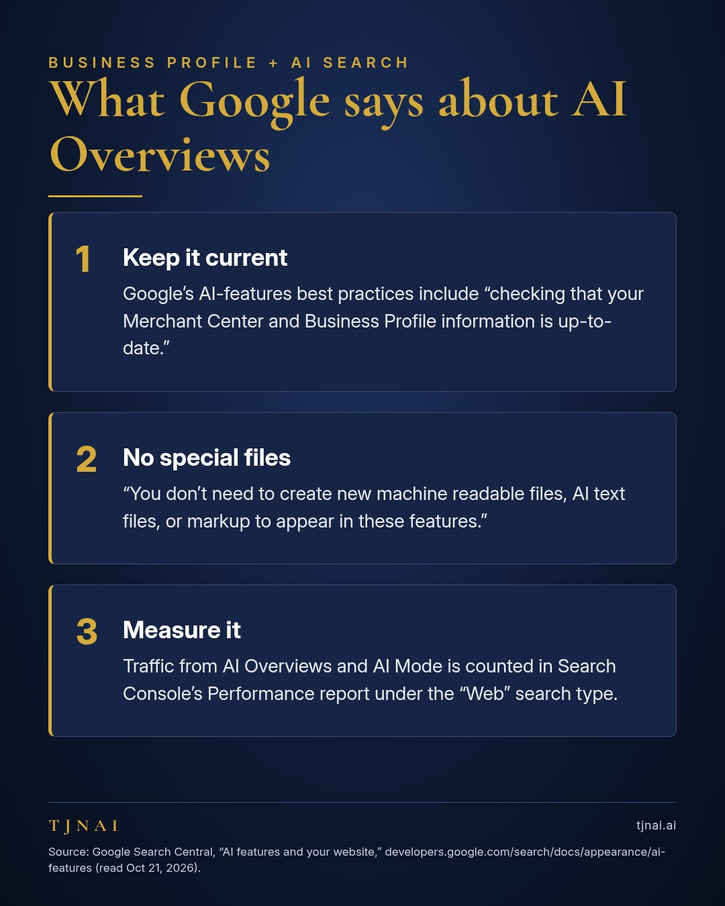

Google Business Profile
Google Business Profile Audit Checklist: 9 Checks for Local Businesses
A Google Business Profile audit checklist is a step-by-step review of a business's listing on Google Search and Maps that finds what is missing, out of date or against Google's rules. This Google Business Profile audit checklist covers the nine checks our team runs, in the order we run them: ownership, core info, categories, services, photos, reviews, posts, citations and a competitor benchmark. Every rule below links to Google's own help pages, so you can check the source yourself. If you'd rather hand the whole job off, TJNAI's AI Agent Audit runs this checklist for you: our bots do the research, and we walk you through the top fixes.
An audit doesn't buy a better ranking. Google says plainly that "there's no way to request or pay for a better local ranking on Google" (Google Business Profile Help). A Google Business Profile audit makes sure the profile is complete, accurate and inside Google's rules, which is the part a business owner controls.

Why audit your Google Business Profile?
A Google Business Profile audit is worth doing because Google ranks local results on signals that a complete, accurate profile supports. Google says "local results are mainly based on relevance, distance, and popularity," and the section that follows calls the third factor prominence (Google Business Profile Help). Google also says "businesses with complete and accurate info are more likely to show up in local search results" (Google Business Profile Help). Google says prominence "means how well-known a business is," and that it's "also based on info like how many websites link to your business and how many reviews you have" (Google Business Profile Help).

The 9-step Google Business Profile audit checklist
1. Ownership and verification
The first audit check is whether the business has claimed and verified its Business Profile, because no other fix sticks until the owner controls the listing. Google states that "only verified businesses can show their business info on Maps and Search" (Google Business Profile Help). Verifying "tells Google that you're authorized to represent the business, so it's more likely to show up in search results" (Google Business Profile Help).
The ownership check also confirms the profile isn't suspended. Google says a profile that violates its guidelines "becomes disabled or suspended and won't show to other users on Google until you resolve the issue" (Google Business Profile Help).
Changes to a Business Profile take time to show. Google notes that "rankings for new businesses can take up to a month to appear in search results," and that edits to business info "can take up to 3 days to appear" (Google Business Profile Help).
- The profile is claimed and verified
- The profile is not suspended or disabled
- The owner, not a former employee or vendor, controls the login
2. Core info: name, address and phone
The core-info check confirms that the business name, address and phone number follow Google's guidelines, because these fields carry some of Google's strictest rules.
Name. A business name on Google "should reflect your business's real-world name, as used consistently on your storefront, website, stationery, and as known to customers" (Google Business Profile Help). Google warns that "including unnecessary information in your business name isn't permitted, and could result in the suspension of your Business Profile," and lists marketing taglines, service or product info and location info as examples (Google Business Profile Help).
Address. A Business Profile needs a real place of business. Google says "P.O. boxes or mailboxes located at remote locations aren't acceptable," and a rented mailing address used as a "virtual office" "isn't eligible for a Business Profile" (Google Business Profile Help).
Duplicates. Google says "there should only be one profile per business," because duplicate profiles "can cause problems with how your information displays on Google Maps and Search" (Google Business Profile Help).
Phone. A Business Profile phone number "must be under the direct control of the business," and Google recommends "a local phone number instead of a central call center helpline number whenever possible" (Google Business Profile Help).
Service-area businesses. A home-service business run from the owner's house should hide that address. Google's own example reads: "if you're a plumber and run your business from your residential address, clear the address from your Business Profile" (Google Business Profile Help). Google also says a service area "shouldn't extend farther than about 2 hours of driving time from where your business is based" (Google Business Profile Help).
- The name matches the storefront and website, with no added keywords
- The address is a real place of business (not a PO box or virtual office), or it's hidden for a service-area business run from home
- Only one profile exists for the business
- The phone is a local number the business controls
- The service area stays within about 2 hours' drive
3. Categories
The category check makes sure the primary and secondary categories say what the business is, not every keyword the owner wants to rank for. Google asks businesses to "use as few categories as possible to describe your overall core business," to choose categories "as specific as possible," and to "not use categories solely as keywords" (Google Business Profile Help). Google's test is that a category should "complete the statement: 'This business IS a' rather than 'this business HAS a'" (Google Business Profile Help).
In our audits, we also compare a business's categories with the categories of the top competitors in the map results. Secondary categories don't show in a logged-out Google Maps view, so a full category check needs the owner's access or a signed-in view.
- The primary category is the most specific one that fits
- Every secondary category passes the "This business IS a" test
- No category was added only as a keyword
4. Services and description
The services check compares the services listed on the business's website with the services listed on its Business Profile, and flags anything the profile is missing. The full Services list isn't visible in a logged-out Maps view, so this check also needs the owner's access.
The business description has its own rules. Google says the description must not "focus on special promotions, prices, and offer sales," and "no links of any type are allowed" (Google Business Profile Help).
- Every main service on the website appears on the profile
- The description explains the business plainly, with no promotions, prices or links
5. Photos
The photo check looks at how many photos a profile has, how recent they are and whether they show the real team, vehicles and work instead of stock images. Photo count is visible in a logged-out Google Maps view, so a business owner can run the photo check from the outside in a couple of minutes. In our audits, we look for recent photos of real jobs.
- Photos are recent
- Photos show the real business, team and work
6. Reviews
The review check covers three things: how many reviews the business has, whether the owner replies to them and how the business asks for new ones. Google says "more reviews and positive ratings can help your business's local ranking" (Google Business Profile Help).
The way a business asks for reviews has firm rules. Google says offering "incentives, like free or discounted goods or services, in exchange for customers to post reviews, change reviews, or remove negative reviews is considered fake & misleading content and is strictly prohibited" (Google Business Profile Help). Google suggests asking through a review link or QR code, and notes that "customers must be signed into a Google Account to leave a review," which customers can set up with a non-Gmail email address (Google Business Profile Help).
Owner replies to reviews should sound like a person. Google advises replies that are "conversational, not promotional," and for negative reviews, to "never share a reviewer's private information" (Google Business Profile Help). Dental offices should go a step further and use generic replies that never confirm someone is a patient. The generic-reply rule for dentists is our team's practice, not a Google quote.

- A review link or QR code goes out after every job
- No incentive of any kind is offered for reviews
- Owner replies are conversational and never share private details
7. Posts
The posts check looks at when the business last posted an update to its Business Profile and how often it posts. The newest "From the owner" post shows on Google Maps without signing in, but the full post history doesn't, so a complete posts check needs the owner's access. In our audits, we note the date of the last post and whether posts mention real jobs, services or neighborhoods.
- The date of the last post is recent
- Posts mention real jobs, services or neighborhoods
8. Citations and NAP consistency
The citation check confirms that the business name, address and phone number (often shortened to NAP) match everywhere the business is listed online, including its own website, other directories and social profiles. Google's name guideline already asks for the name "as used consistently on your storefront, website, stationery" (Google Business Profile Help). Duplicate listings are part of the same check, because Google warns that duplicates "can cause problems with how your information displays on Google Maps and Search" (Google Business Profile Help).
- Name, address and phone match on the website and in major directories
- Old addresses and phone numbers are updated
9. Competitor benchmark
The competitor benchmark compares a Business Profile with the top three businesses in the map results for the business's main search, such as "plumber in [your town]." Our team runs that search from near the town center in a private browser window, because local results depend on where the searcher is. The audit then lines up rating, review count, primary category, photo count, posts and owner replies side by side.
A logged-out view has limits. A logged-out Google Maps view shows rating, lifetime review count, primary category, photo count, owner replies and claimed status. A logged-out view hides review dates, the full post history, the Services list and secondary categories. A full benchmark therefore uses the owner's access. TJNAI's AI Agent Audit starts with this outside-in research before the call with the owner, so the owner's time goes to the fixes.

- The top 3 map results are recorded for the main search
- Reviews, photos, posts and replies are compared side by side
- Gaps are ranked by impact
Does a Google Business Profile affect AI search?
A Google Business Profile does matter for Google's AI features. Google's best-practice list for AI Overviews and AI Mode includes "checking that your Merchant Center and Business Profile information is up-to-date" (Google Search Central).
Showing up in Google's AI features takes no special files. Google says "you don't need to create new machine readable files, AI text files, or markup to appear in these features. There's also no special schema.org structured data that you need to add" (Google Search Central). To be eligible as a supporting link, Google says "a page must be indexed and eligible to be shown in Google Search with a snippet" (Google Search Central). Traffic from AI Overviews and AI Mode is counted in Search Console's Performance report under the "Web" search type (Google Search Central).

Want someone to run this checklist for you?
Running a Google Business Profile audit for a local business is exactly what TJNAI does. The TJNAI AI Agent Audit is $350 and is delivered within one week. Nova, our research bot, checks the Google Business Profile, the website and how leads get captured. We then hold a 30-minute call with the owner about where the business loses time and leads. The owner gets a written map with the top 3–5 fixes ranked, and Tim, our founder, approves every report and walks the owner through it himself. Our bots do the work, and Tim makes the calls that matter. You can read more about TJNAI and how Tim runs it with a team of AI bots in the About section of tjnai.ai.
To ask about an audit, see the AI Agent Audit or email info@tjnai.ai. All sales are final; see tjnai.ai/refund.
Sources
All Google pages were read on Oct 21, 2026 (ET). Google edits help pages without notice.
- Google Business Profile Help, "Guidelines for representing your business on Google": https://support.google.com/business/answer/3038177?hl=en
- Google Business Profile Help, "Tips to improve your local ranking on Google": https://support.google.com/business/answer/7091?hl=en
- Google Business Profile Help, "Tips to get more reviews": https://support.google.com/business/answer/3474122?hl=en
- Google Business Profile Help, "Find your business on Google": https://support.google.com/business/answer/145585?hl=en
- Google Search Central, "AI features and your website": https://developers.google.com/search/docs/appearance/ai-features